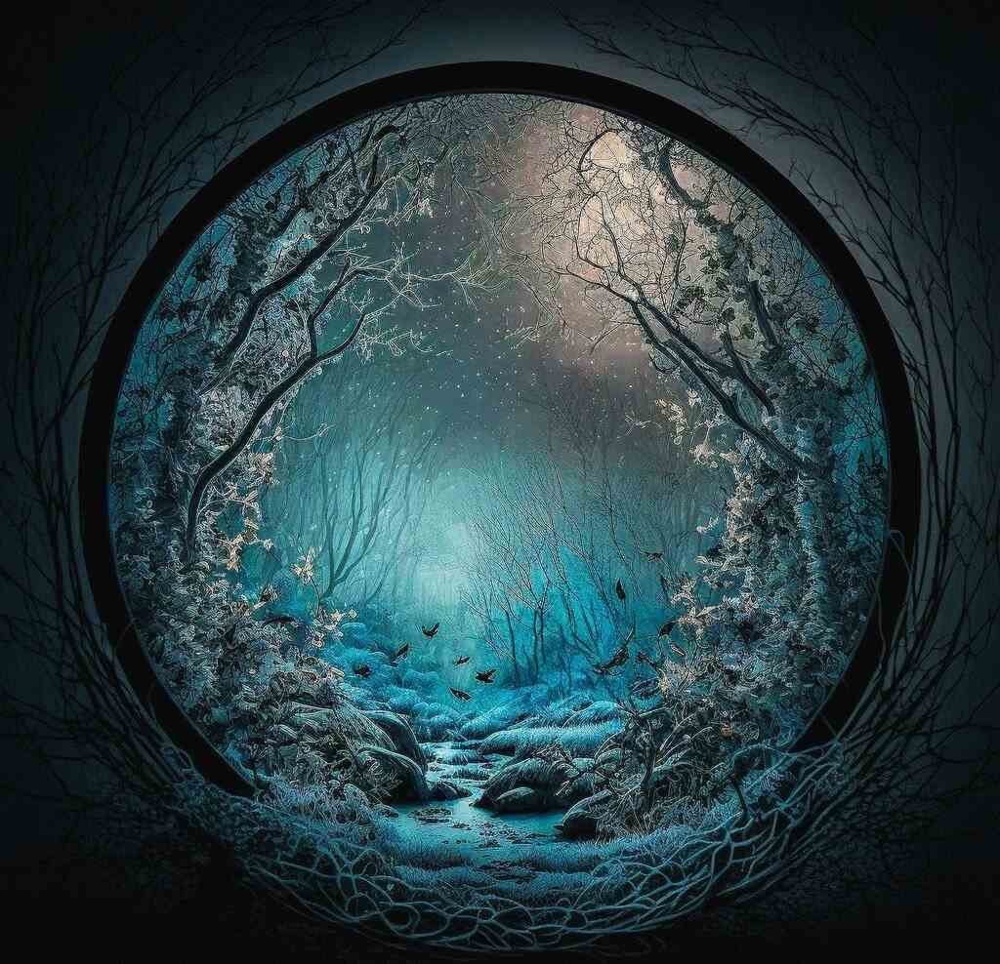
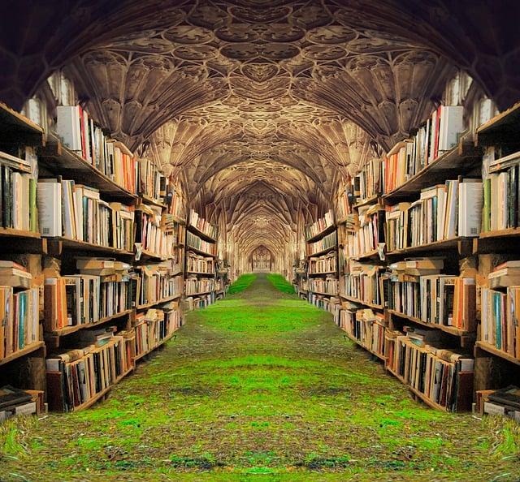
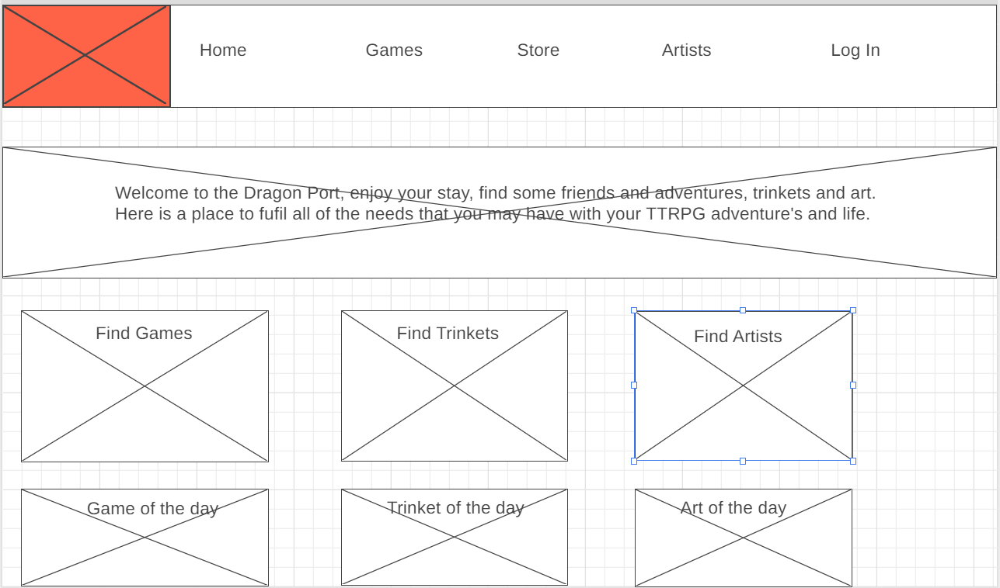

Overview
Purpose
Introducing Tabletop Nexus, the ultimate solution to streamline your TTRPG experience! Say goodbye to juggling multiple tabs and websites. Tabletop Nexus connects all the essential aspects you need in one centralized platform. Discover players for your games, access official and homebrew rules, explore a marketplace for artists and creatives to showcase their work and merchandise. Our goal is to provide tailored recommendations based on your preferences so you can effortlessly find relevant products and homebrew content that aligns with your current games and interests. By simplifying and enhancing your TTRPG journey, Tabletop Nexus ensures you can focus on what truly matters, immersing yourself in epic adventures with ease. Say hello to a seamless gaming experience and goodbye to needing dozens of different websites. Join Tabletop Nexus today!
Audience
We hope to appeal to both...
Branding
Website Logo

Style Guide
Color Palette
Palette URL: https://coolors.co/396e94-e7c24f-a43312-381d2a-aabd8c| Primary | Secondary | Accent 1 | Accent 2 |
|---|---|---|---|
| #396e94 | #e7c24f | #a43312 | #381d2a |
Typography
Heading Font: MedievalSharp
Paragraph Font: Kanit
Normal paragraph example
Hey everyone, this is Dragon Port, your one-stop shop for all your TTRPG needs. Treat this place as a trade port where many people come by to showcase their wares or find other like-minded individuals.
Colored paragraph example
This site is able to stay up through advertisements; however, we try to only show smaller or independent groups, so don't expect to be seeing anyone raiding any shadow legends, "unless we got paid a lot."
Navigation
Site Map
Content
Home page
Why will people come to this site? Our target audience is members of the TTRPG community, both new and old. Ideally, we would attract more creative types, and most likely, our users will be those who play online rather than in person. In addition, we also hope to attract freelance artists in much the same way as places such as Twitter or DeviantArt have, but with an emphasis on commission work placed at the top of priorities. This ideally would allow artists to be found by a group of people who are more likely to pay for commissions, and players would have a clear list of artists to look through. The last group that we hope to attract would be small business owners. Sites like Etsy are able to be very profitable and act as a place for small business owners to sell their works. This site would ideally act in a similar way, but more targeted. Advertising only works if done to an audience that appreciates it, and thus, this would allow these sellers to have a clearer line to the individuals interested in their product, under the pretense that it has some sort of theme that fits in a TTRPG world.
Images for the Home page
Create account
What information do we require from users? If an individual was just browsing, then we likely don't need anything from them. This means that they can look at goods and art being sold. However, if someone wants to get more involved, such as purchasing or joining/creating a game, then we would require an account and ideally cookies. The account would likely have their email included to help protect against bots, and we would need sale information (card number, address, etc.) if they were planning on purchasing anything.
Why come here?
Well, there are many sites that can perform similar tasks, and ours has three major benefits over our competitors. Firstly, our site is independently owned and covers a large number of games. Currently, there is a lot of controversy with the company who makes DnD (Wizards of the Coast), and many people have deleted their accounts on these sites, thus allowing an opening in the market. Secondly, many people enjoy the convenience of not needing to change sites. No one likes needing to sign up for a dozen subscriptions or needing to use 5 different websites for their tasks. With ours, you only need one to act as a hub. Lastly, we hope to be more connected with independent creators than other sites. Now, this is the most difficult task; however, we believe that by reaching out, we can attract a number of individuals, which will then lead to us gaining more as the site grows. 
Store
What problems will this site face? The first problem that this site will face is the lack of experience behind its creator and the vast number of connections that would need to be made. The second and likely biggest problem is that this site, much like its namesake of a port, lives and dies based on the people that come in. At the start, there would be no one, and very few people means that very few would want to come. Even once it does pick up steam, there needs to be a diversity of people that come. The final problem would be how the site is shaped by the users rather than the admins. If we find that most players want to play cyberpunk games, then the artists who stick around would be the ones who could draw cyberpunk art. The same goes for all other aspects. If NSFW art becomes popular, then that will reflect in other aspects of who visits. The same is true of the opposite, in which if this site is squeaky clean, that will encourage a sizable number of individuals to look elsewhere. It's a balancing act that is determined by the people who use it.
Wireframes
Create three wireframes for your site. One for each page and list them here
Home
I want the home page to act more as a place to go to the other more specialized parts of the website. At the bottom, in theory there would be a new product shown there everyday. The Log in will change to your user name and act as a link when sighted in.
games
[Any additional details about page 2 that the wireframe does not make clear]

Store
If there were additional products it would scroll down into several category's.

Artist Gallery
This would act as another jumping off point for people, but to get attention a new art peace would be shown at the bottom.